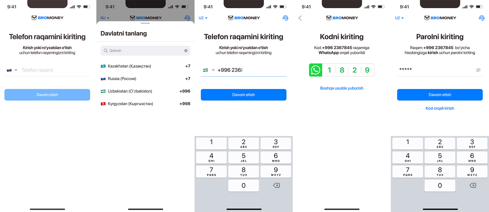
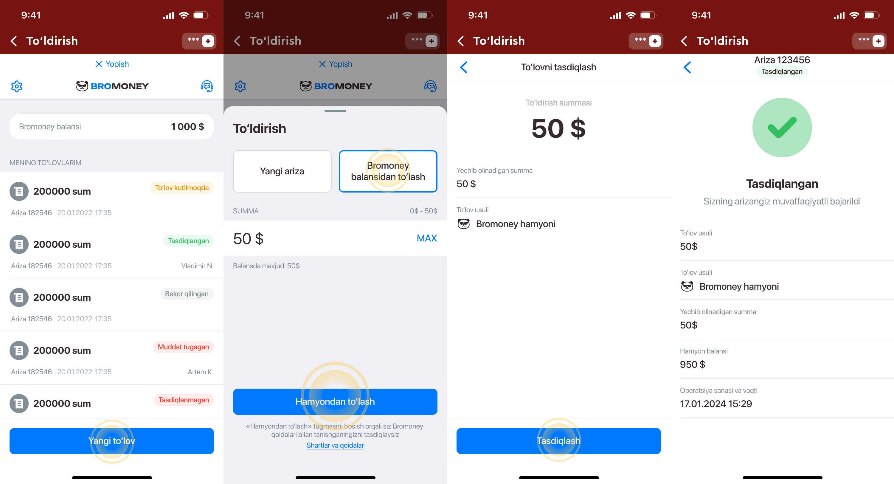

Havolaga o‘ting: https://m.bromoney.net.
Mintaqangizni tanlang, raqamingizni kiriting. WhatsApp-ga kelgan 4 raqamli kodni kiriting. Parolni yarating va eslab qoling.
Bromoney hisobingizdan pul chiqarish uchun bosh sahifadagi Chiqarish tugmasini bosing.
Jami ikkita usul mavjud:
O‘yin hisobingizni hamyon balansidan to‘ldirishingiz mumkin. Buning uchun Olimp ga kiring → «To‘ldirish» bo‘limiga o‘ting → to‘lov usuli sifatida Bromoney ni tanlang → hamyon balansidan to‘lang.
Qozog‘iston foydalanuvchilari uchun pul chiqarish faqat Kaspi Bank karta orqali amalga oshiriladi.
Agar agent so‘rovni qabul qilib, holati «Ishlov berilmoqda» bo‘lsa, uni bekor qilish mumkin emas.
Kriptovalyuta orqali chiqarish ham mavjud. Shuningdek, hamyon balansidan o‘yin hisobingizni to‘ldirishingiz mumkin: Olimp → To‘ldirish → Bromoney → hamyon balansidan to‘lash.
• Hamyon balansidan to‘ldirganda: darhol keladi.
• Agent orqali: o‘rtacha 5–75 daqiqa. Tekshirishni tezlashtirish uchun chek va to‘liq ism-familiyangizni ilova qiling.
Hamyonga to‘g‘ridan-to‘g‘ri pul qo‘yish mumkin emas. O‘yin hisobingizni hamkor (Olimp) tomonida «Karta dan Bromoney kartasiga o‘tkazish» usuli bilan to‘ldiring.
Bromoney ilovasiga kiring → yuqori chap burchakda «Sozlamalar» → Akkauntni o‘chirish.
Ma’lumotlar noyob — bir xil karta raqamini ikki marta qo‘shib bo‘lmaydi. Do‘stingiz yoki qarindoshingizning karta raqamini ishlatishingiz mumkin.
Bromoney balansi raqamli dollarga bog‘langan. Kurs o‘zgarishi mumkin, shuning uchun ko‘rsatilgan summa farq qilishi mumkin.